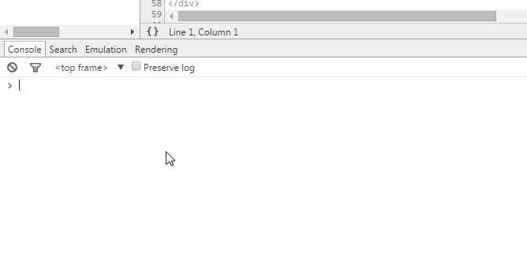

Nouran Mahmoud Marouf
Front-End Engineer at Tarifah
CATreloaded member and ex-Cloud9ers
A JOURNEY THROUGH CHROME DEVTOOLS
Chrome DevTools
What?, Why?, How?
What?
A set of web authoring and debugging tools built into Google Chrome.
Why?
- Productive/professional developer
- Find bugs quickly
- Live editing of HTML, CSS, JS
- performance tracking
How?
Just install Google Chrome browser.
- shift+ctrl+i
- Right-click > Inspect Element
- View > Developer > Developer Tools
- etc ..
Chrome Canary version
- The newest of Chrome features
- gets new features every day
- Designed for developers and early adopters
- Prone to breakage!
Journey program
- Dive into the high-level structure of the browers
- Use Tools
- Have a look at some cool DevTools features
Dive into the high-level structure of the browers
What happens after getting a response!!
Browser hight-level structure
- The user interface: Address bar, back/forward button, bookmarking menu etc.
- The browser engine: The interface for querying and manipulating the rendering engine.
- The rendering engine: Displaying/parsing the requested content.
- Networking: Responsible for networks calls, like HTTP requests
- UI backend: Used for painting/drawing basic widgets on the screen.
- JavaScript interpreter: Parse and execute the JavaScript code.
- Data storage: Persistence layer for saving all sorts of data on the hard disk, EX:- cookies.

Rendering Engine
After a response delivered to the browser through the network layer, it starts its tour through the render engine.
- HTML (DOM) + Parse CSS (CSSOM) to generate to Render tree
- Render tree contains elements as rectangles in right order to be displayed.
- Layout processing , giving the element the real coordinates.
- Painting elements on pixels using the UI backend layer.


Rendering engine basic flow.
Use Tools
The Elements tool:
Allows you to see the raw HTML, raw CSS styles, the Document Object Model and manipulate either in real time

The Networks tool:
What components your web page is requesting from web servers, how long these requests take, and how much bandwidth is required. You can also view the HTTP request and response headers for each of your resources.
The Sources tool:
To peer inside the JavaScript for a page, A list of loaded scripts, Full featured script debugger, Change the JavaScript on the fly!
Timeline tool

The Profiles tool:
The Profiles tool helps you capture and analyze the performance of JavaScript scripts. For example, you can learn which functions take the most time to execute and zoom in on exactly where to optimize.
The Resources tool:
Modern web applications require more persistence than simply cookies, and the Resources tool helps you track, query, and debug local browser storage. This tool can display and query data stored in local databases, local storage, session storage, and cookies.
The Audit tool:
The Audit tool is web optimization consultant sitting. Analyze a page as it loads and Provide suggestions and optimizations for decreasing page load time.

The Console tool:
Last but definitely not least, A full featured Console. You can interact with your app's views and scripts , run javascript commands and view log output.
Have a look at some cool DevTools features (tips and tricks)
Quick file switching
Ctrl + P (Cmd + P on Mac)

Search within source code
Ctrl + Shift + F (Cmd + Opt + F)

Go to line
Ctrl + G for Windows and Linux, (or Cmd + L for Mac)
or Ctrl+p+:

Selecting elements in console
$0 – $4 – A history of the five most recent DOM elements that you’ve selected in the elements panel, $0 being the latest.

Use multiple carets & selections
Hold Ctrl (Cmd for Mac) and click where you want them to be

Preserve Log
persist the log instead of clearing it on every page load.
Pretty Print {}
return minimized code to its humanly readable format.

version control
Device mode
Device emulation sensors

Color Picker

Force element state

Visualize the shadow DOM

Select next occurrence
Ctrl + D (Cmd + D)

Change color format
Shift + Click on the color preview
Editing local files through workspaces
Workspace is a real IDE. Workspaces match the files in the Sources tab to your local project files, so now you can edit and save directly, without having to copy/paste your changes into an external text editor.
Lets see it in action ;)
Tool used for creating the presentation
https://github.com/markdalgleish/bespoke.js
resources
- http://taligarsiel.com/Projects/howbrowserswork1.htm
- http://www.html5rocks.com/en/tutorials/developertools/part1/
- http://tutorialzine.com/2015/03/15-must-know-chrome-devtools-tips-tricks/
- http://addyosmani.com/blog/performance-optimisation-with-timeline-profiles/
- http://webcomponents.org/articles/introduction-to-shadow-dom/
- http://paullewis.github.io/udacity-sample/
- https://developer.chrome.com/devtools
- RECOMMENDED http://discover-devtools.codeschool.com
- RECOMMENDEDhttps://www.udacity.com/course/viewer#!/c-ud884